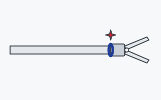
Minimally invasive instruments
Jaw and tip assemblies welded to thin wall shafts for laparoscopic and endoscopic instruments, with tight control of distortion and heat input.
Typical materials304, 316L and 17-4 PH stainless
Parts we weld
A sample of the components we laser weld. If it is weldable, we will find a way to do it. Customer drawings, part numbers and names are always held in confidence.

Jaw and tip assemblies welded to thin wall shafts for laparoscopic and endoscopic instruments, with tight control of distortion and heat input.
Typical materials304, 316L and 17-4 PH stainless
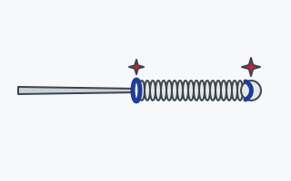
Tip, coil and marker band welds on fine wire and micro tubing, where the joint is often smaller than a millimeter.
Typical materials304V and 316LVM stainless, Nitinol, platinum iridium
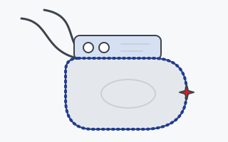
Hermetic perimeter seam welds on titanium pulse generator cans for pacemakers, neurostimulators and other active implants, plus feedthrough and header welds.
Typical materialsCP titanium, Ti-6Al-4V, MP35N, platinum
We also weld orthopedic implants and instruments, dental components, endoscope and camera housings, and surgical tools of all kinds.
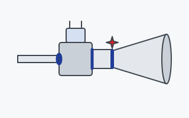
Propellant line, valve and thrust chamber welds for satellite and spacecraft propulsion, where every joint has to hold in vacuum and through launch loads.
Typical materialsTitanium, Inconel, 300 series stainless
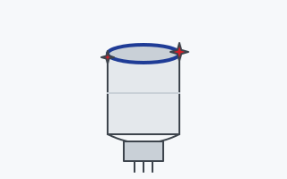
Diaphragm and cap welds on pressure and temperature sensors with tight heat input control.
Typical materialsInconel, 17-4 PH, Kovar
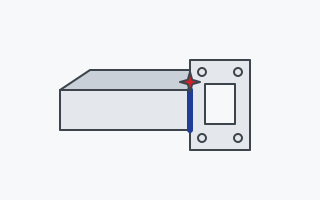
Flange and seam welds on waveguide and RF components for satellite and radar systems, where distortion has to stay near zero.
Typical materialsAluminum, copper, brass
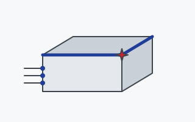
Lid seal welds on electronic packages and feedthroughs, built on decades of hermetic sealing work.
Typical materialsKovar, aluminum, stainless
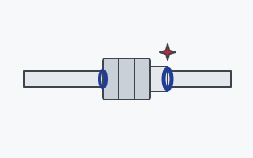
Butt welds on UHP tube, fittings and VCR glands where the inside bead has to be smooth, full penetration and free of discoloration.
Typical materials316L VAR and VIM VAR stainless
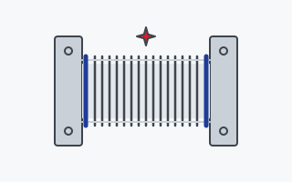
Bellows to flange welds and vacuum components that have to hold leak tight through thousands of cycles.
Typical materials316L, AM 350, Inconel 625
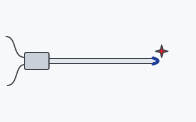
Sheath tip closures and transition welds on thermocouples, RTDs and cartridge heaters for process chambers.
Typical materialsInconel 600, 316 stainless, Hastelloy
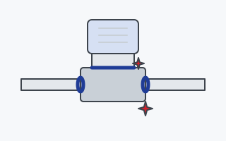
Tube stub, body and bonnet welds on solenoid and control valves for gas, fuel and fluid systems, leak tight and to print.
Typical materials316L, 17-4 PH, Inconel, titanium
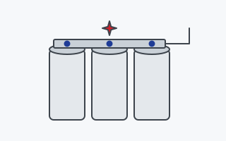
Tab and bus bar welds on cells and packs, including reflective and dissimilar metals.
Typical materialsNickel, copper, aluminum
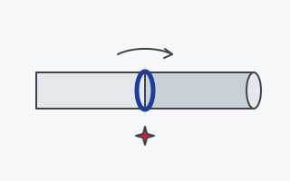
Rotary all around welds on shafts, pins and tubes, from one prototype to production lots.
Typical materialsStainless, alloy steels, Inconel
Including but not limited to 300 and 400 series stainless, 17-4 PH, 15-5 PH, 455 and 465. Cold rolled, carbon and alloy steels. Aluminum 1100, 2219, 4047, 5052 and 6061. Copper, beryllium copper and brass. Titanium and Ti-6Al-4V. Inconel, Hastelloy and Monel. Kovar and Invar. MP35N and cobalt alloys. Nitinol. Tantalum, niobium and molybdenum. Platinum, gold, silver and palladium.
Send the drawing and quantity. We will tell you how we would weld it and quote it within two business days.